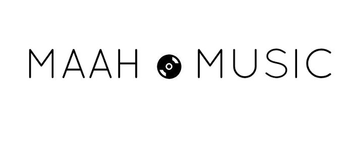

Na Trave
Na Trave é o aclamado álbum de estreia do cantor e compositor capixaba John. Ex-advogado, o artista estourou nas redes sociais após um vídeo viral emocionante gravado ao lado de sua namorada, Amanda Vieira, revelando a emocionante letra da música "Preciso Mudar". Seu trabalho mistura pop com samba de forma autêntica e contagiante.

A Arquitetura dos Beats
Bastidores da montagem sonora e estética fosca de um projeto de peso.


O Impacto das Linhas
A recepção crítica do trabalho mais íntimo e cirúrgico do John.
"Um convite para quem gosta de histórias contadas em voz suave, violões delicados e uma produção minimalista, que valoriza cada respiração e cada silêncio."
Ouve o Som ★★★★★ (5/5)
★★★★★ (5/5)
"Essa música bate forte porque fala sobre deixar a vida de solteiro desorganizada para construir algo de verdade com alguém"
Fórum MPB
★★★★☆ (4/5)"O som ficou bem amarrado: guitarras, um violão marcante, metais, bateria e percussão com groove e swing e letras diretas."
Blog Maah Music